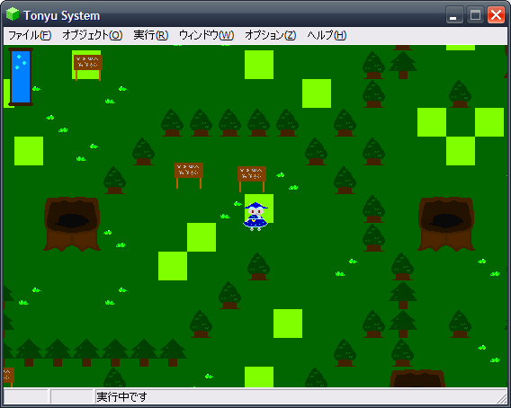

ブログ5000HITS記念！
シルビアハーブの世界の一部を少しだけ公開！
メインのブログを始めて約3年(実質2年ですが)、
いろいろな話題のおかげかアクセス数5000HITSいたしました！
記念に現在製作中のゲーム、シルビアハーブの世界の一部を公開します！
(ちなみにブログにもアルバム形式で載せてあります。)
画像の枚数は少ないですが、いろいろ公開するのは、また今度ということで！
個人的には、まだ公開したくない部分が盛り沢山なのと、
まだ開発中なので変更になる可能性があるかもしれないからです。
＊開発途中のため、内容が変更になる可能性があります。
舞台は、どこかの世界にあるツルハシ大陸の中心に位置する小さな村。
(ちなみにツルハシ大陸は、メルヘンナイトの世界と同じです。)
なぜか泣いている主人公・・・その訳は・・・？
妖精さん登場！
メルヘンナイトの時のあの約束守りましたよ。ええ！
初公開！！ゲーム画面！！
最初のステージは、こんな感じです。看板がたくさんです（何）
左上はLIFEメーターです。今回はゲーム！って感じの要素を
入れてみました。
この子、じーっとしていると何かアクションをおこしてくれるかも！？

浅瀬までは歩けます。ただ、なにか不自然なのは、
グラフィック書くのとかプログラム設定するのがメンｄ(蹴
ちなみに、ここから南にも大地は広がっていますが、それはまた別のゲームで作れたらいいなと 思っています。
・・・その時に語りたいと思ったお話の大まかなテーマのヒントが、このサイトJANE PROJECT内のどこかにあります。
ステージ2の一部分です！おそらく今まで作ったマップの中で
最大スケール
あと、どんな感じに攻撃するのかも一部公開。
前回要望があったダメージカウンターも実装しました！
他にも攻撃方法は用意されています。うまく使い分けよう！
以上です！他にもメルヘンナイトから様々な要素が進化していま す。
ゲーム自体の軽量化を目指しつつ、特に今回は、システム面を
強化いたしました！例えば、ゲーム画面での左上のLIFEメーターだけ
ではなく、ENTERキーを押すと詳細な情報を表示させたり、
表示させたままにさせるためのロック機能もあります。
あと今回は、お話自体が短い予定ですが、セーブ・ロード機能を実装しました。
これで、初めからやり直さなくて済みます。(オートセーブの予定)
会話ウインドウのデザインもメルヘンナイトのシンプルなものから変更しました。
会話ウインドウのシステム自体も、とても使いやすいシステムに仕上げたので
開発側(自分)も気軽に作れています。
・・・とまぁ、他にも見所はたくさんあります。
公開予定日は、まだ決まっていません。 まだまだ作るものが沢山ありますので。
個人的には、夏休み中に公開できればいいなと思っています。
いずれ開発が一段落付いたら、追加のスクリーンショットと、この主人公(獣の子)
の名前も公開しましょう。(開発段階80％くらいになったら)
もちろん無料です。利益は追求しません。
皆様が、このゲームをプレイして楽しんでくれたら・・・
―それが私にとっての利益です。
2010年3月9日
開発段階10％
本を閉じる(TOP)